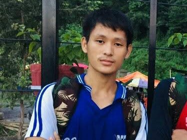

Hello, My Name is Dilli Hang Rai.
My father is an ex-serviceman.He served in Indian army for 19years and retired right after my birth that was in 2002AD.But now he is farmer we have small portion of land.
Our main source of income is father's pension but it is not enough for us we do pet chickens, harvest plants rice maize garlic and seasonal vegetables for home.
I want to be officer cadet in Nepal army because it's a final and biggest opportunity for me to make my career and fulfill my incomplete dream. I could get chance to serve the nation army and can support my family financially.i could make my parents feel proud and secure.they could get more persitge in the society becoming cadet has became my aim and it's final chance for me to prove myself. serving in nation defense is the best career option I have seen till now! My remaining life whole destiny depends upon it.